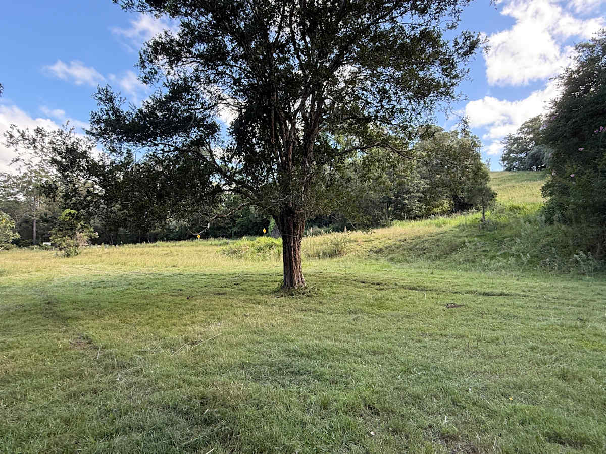
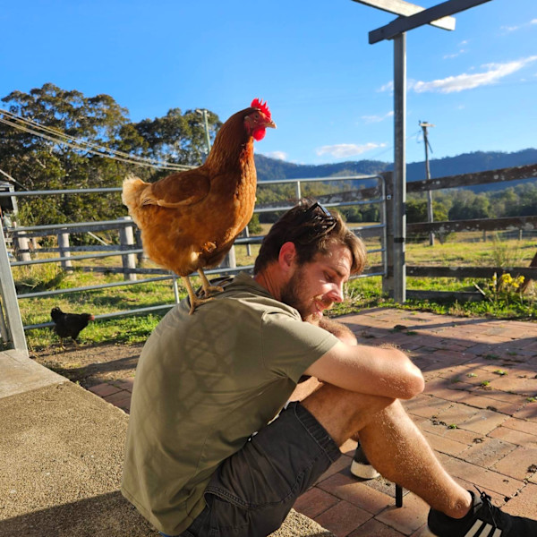

The Retreat
Ferny Glen, Queensland
Tyungun is a family-owned cattle property in Ferny Glen, threaded by Flying Fox Creek and edged by silky oak and pine.
The cattle graze, the seasons turn, and the days run slowly. We keep five sites spread across the property.
What it offers is space and quiet.
Why it feels different
Most campgrounds put you beside a stranger. Tyungun is different: each site sits behind its own gate, out of sight and earshot.
Guests often say they barely saw another person, and stayed longer than planned.
As one put it, “like you’re the only one around for miles.”
A handy base — far enough to feel away, close enough not to be stuck. The precise address is shared once your stay is confirmed.

Your host · Hipcamp Star Host
Bryce farms this country with his family and looks after guests personally. First-time campers are met on arrival, shown the ropes, and left with firewood. Then he leaves you to the quiet.
"Star Hosts respond quickly."